The influence curve is obtained by replacing the chosen observation by a candidate value and then re-fitting the same model and computing the statistic of interest: coefficient estimate, quantile, ... The rug shows the \(y_b\) and the vertical line shows the observation chosen for the analysis.
# S3 method for class 'influence.TVGEV'
autoplot(object, ...)Arguments
Value
An object inheriting grom "ggplot" showing the
(finite-sample) influence function for the observation and the
statistic that have been chosen.
Examples
library(ismev)
data(venice)
df <- data.frame(Date = as.Date(paste0(venice[ , "Year"], "-01-01")),
Sealevel = venice[ , "r1"] / 100)
fit0 <- TVGEV(data = df, date = "Date", response = "Sealevel")
autoplot(fit0)
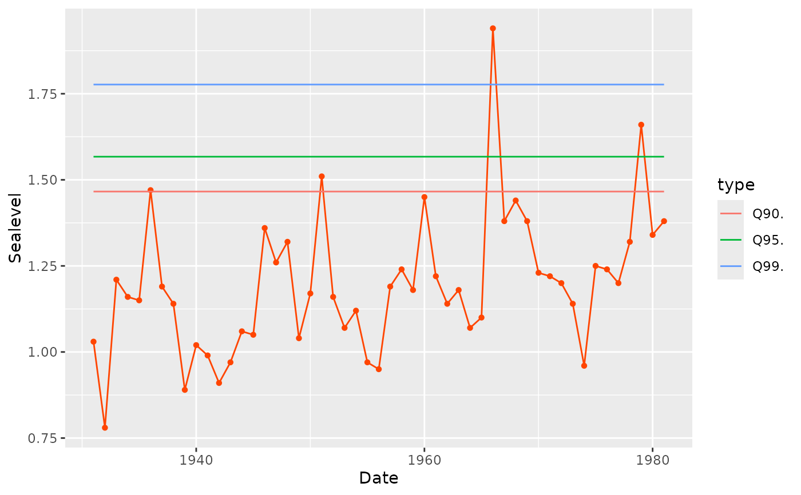
RL_2050 <- function(model) {
c("RL_2050(100)" = quantile(model, prob = 0.99, date = "2050-01-01")[1])
}
autoplot(fit0)
 influence(fit0, what = RL_2050) |> autoplot()
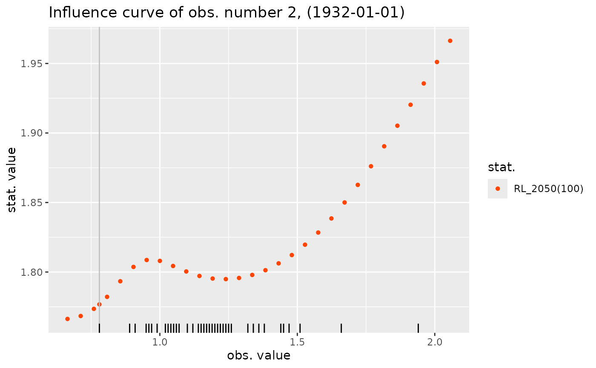
## fit with a linear time trend
fit1 <- TVGEV(data = df, date = "Date", response = "Sealevel",
design = polynomX(Date, degree = 1), loc = ~t1)
autoplot(fit1)
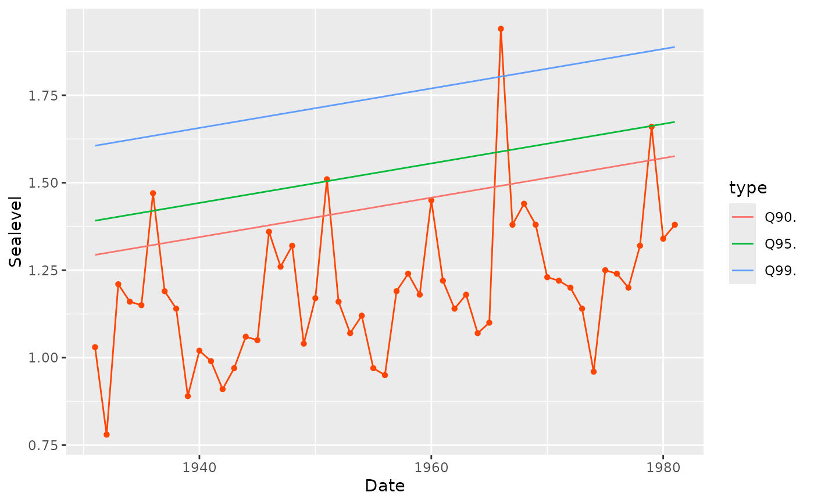
summary(fit1)
#> Call:
#> TVGEV(data = df, date = "Date", response = "Sealevel", design = polynomX(Date,
#> degree = 1), loc = ~t1)
#>
#> Coefficients:
#> Estimate Std. Error
#> mu_0 1.195557319 0.029916531
#> mu_t1 0.005643441 0.001394825
#> sigma_0 0.145840461 0.015782941
#> xi_0 -0.027380891 0.082686797
#>
#> Negative log-likelihood:
#> -18.801
#>
influence(fit1) |> autoplot()
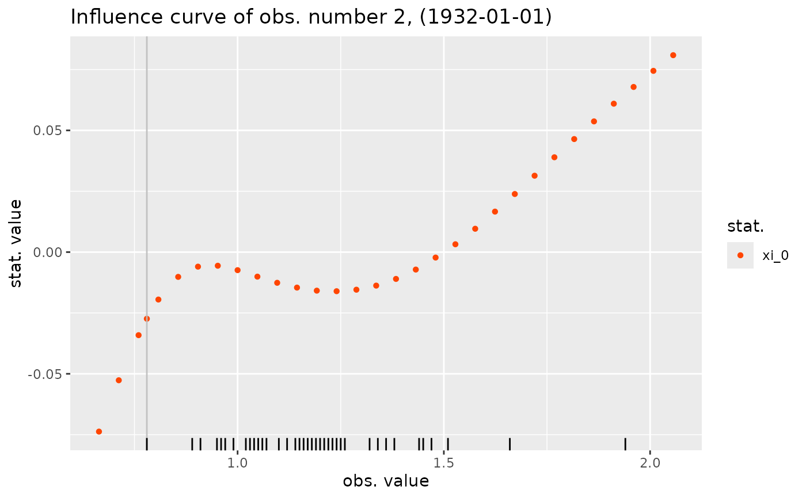
influence(fit1, what = RL_2050) |> autoplot()
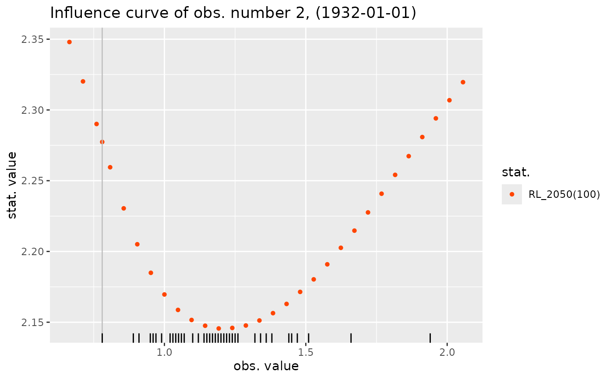
influence(fit1, which = "max", what = RL_2050) |> autoplot()
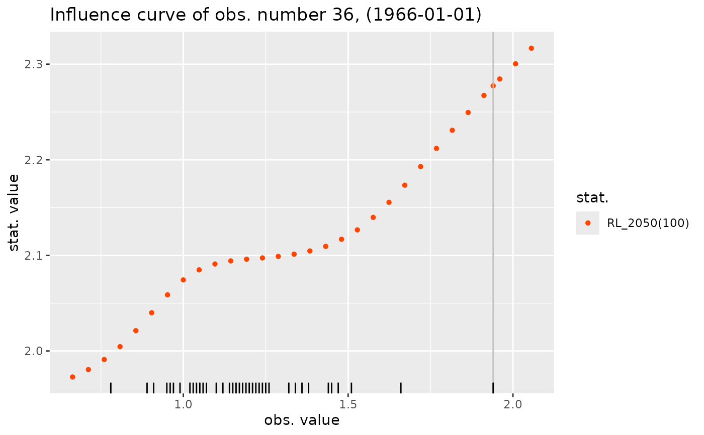
## Influence curve for the estimated slope
slope <- function(model) {
c("slope\n(cm/100 yr)" = 100 * unname(coef(model)["mu_t1"]))
}
influence(fit1, which = "max", what = slope) |> autoplot()
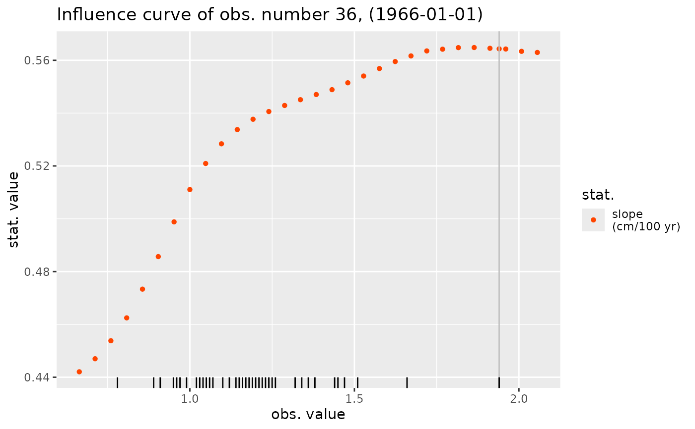
influence(fit1, which = "min", what = slope) |> autoplot()
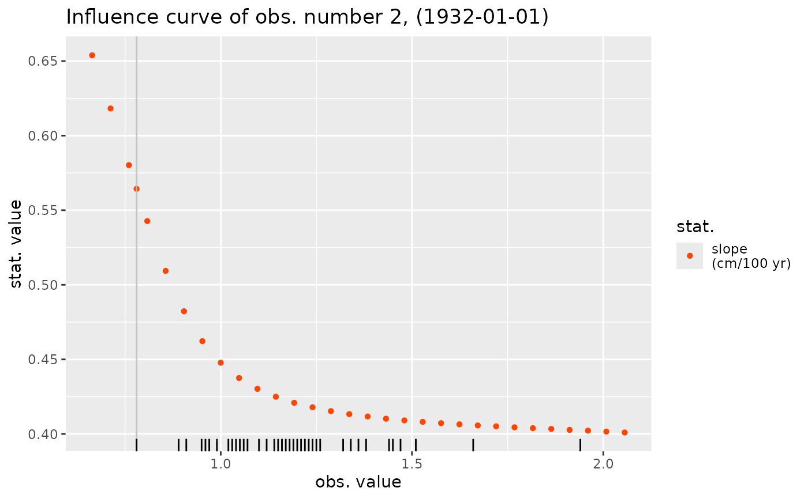
influence(fit0, what = RL_2050) |> autoplot()
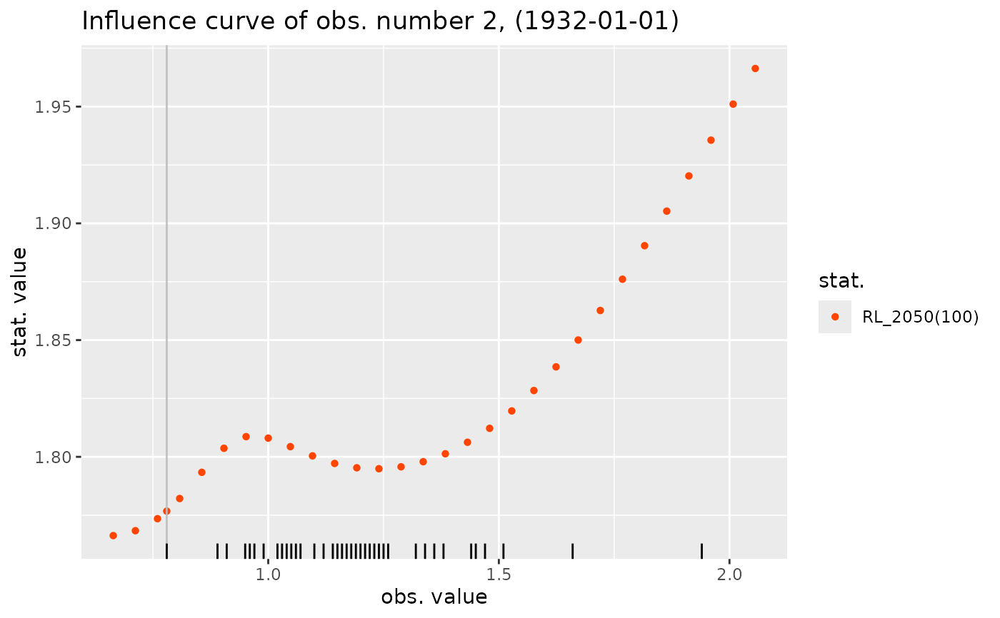
## fit with a linear time trend
fit1 <- TVGEV(data = df, date = "Date", response = "Sealevel",
design = polynomX(Date, degree = 1), loc = ~t1)
autoplot(fit1)
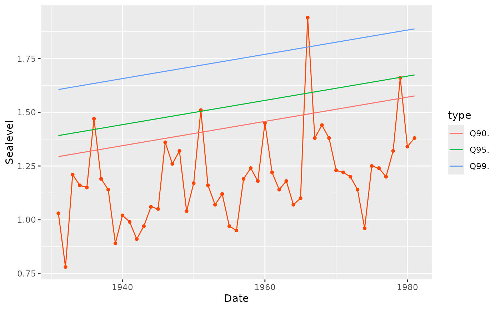
summary(fit1)
#> Call:
#> TVGEV(data = df, date = "Date", response = "Sealevel", design = polynomX(Date,
#> degree = 1), loc = ~t1)
#>
#> Coefficients:
#> Estimate Std. Error
#> mu_0 1.195557319 0.029916531
#> mu_t1 0.005643441 0.001394825
#> sigma_0 0.145840461 0.015782941
#> xi_0 -0.027380891 0.082686797
#>
#> Negative log-likelihood:
#> -18.801
#>
influence(fit1) |> autoplot()
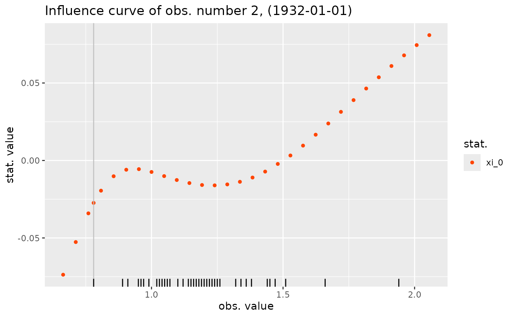
influence(fit1, what = RL_2050) |> autoplot()
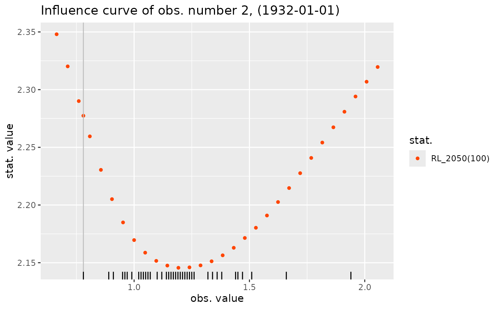
influence(fit1, which = "max", what = RL_2050) |> autoplot()
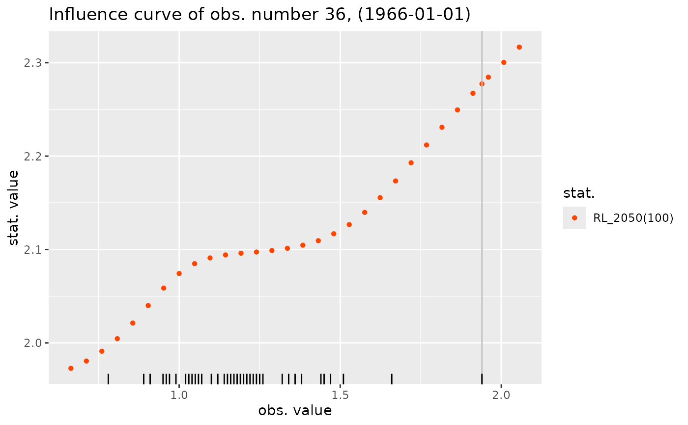
## Influence curve for the estimated slope
slope <- function(model) {
c("slope\n(cm/100 yr)" = 100 * unname(coef(model)["mu_t1"]))
}
influence(fit1, which = "max", what = slope) |> autoplot()
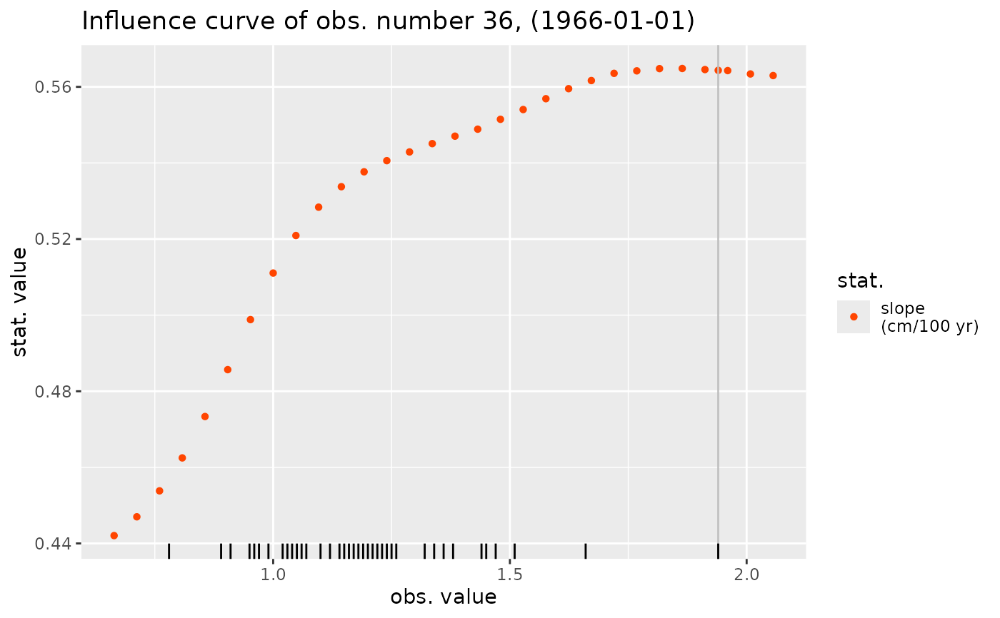
influence(fit1, which = "min", what = slope) |> autoplot()
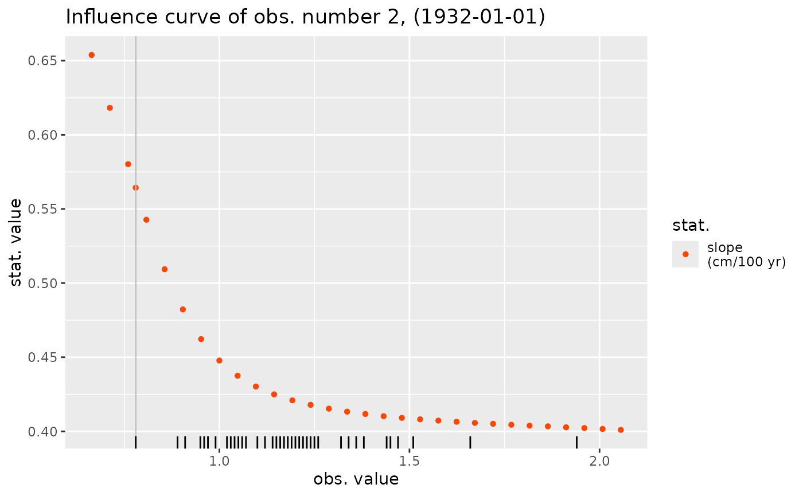